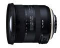

器材库 > APS画幅镜头 > 10-24/3.5-4.5 Di Ⅱ VC HLD（B023）

详细规格
镜头类型
超广角变焦镜头
发布日期
2017-02-07
焦距
10mm-24mm
等效35mm画幅焦距
16mm-37mm
最大光圈
f/3.5-4.5
最小光圈
f/22-29
视角（对角）
108°44 - 60°2
镜头结构
16片/11组
光圈叶片
7片
最近对焦距离
24cm
最大放大倍率
1:5.3
驱动马达
HLD
滤镜口径
77mm
镜头卡口
Canon EF, Nikon F
防抖
是
颜色
黑色
尺寸
佳能卡口：83.6×84.6mm尼康卡口：83.6×82.1mm
重量
440g
附件
花瓣型遮光罩、镜头盖
匿名网友2017-11-03 13:134.83 分
操作性 5.00耐用性 5.00性价比 5.00解像力 4.50色彩还原 4.50机械结构 5.00
笨笨小兔子2017-08-02 12:233.92 分
操作性 4.50耐用性 4.00性价比 4.00解像力 3.50色彩还原 3.50机械结构 4.00
产品图 / 样片
B023
评测 / 相关文章
- 详细内容 （存档）
- APS-C超广角新锐 腾龙10-24mm镜头测评 （存档）
- ［试用］腾龙10-24mm VC HLD镜头样片 （存档）
- ［行情］腾龙新超广10-24mm镜头上市 （存档）
- ［资讯］CP+2017独家报道 各家新货逐个品（下） （存档）
- ［行情］腾龙新品国外开始预订 （存档）